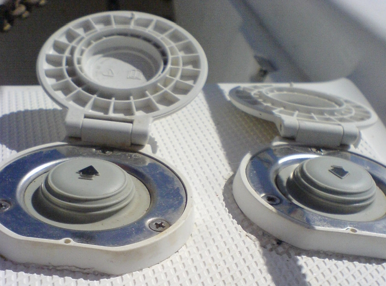

Sailboats and motor boats drop and retrieve anchor from the bow. The operation is facilitated by an electric windlass. The two senses of rotation of the windlass determine whether the anchor will go down or up. Correspondingly, two simple buttons are necessary, an “up” button and a “down” button. “Up” and “down” describe the consequences of the motor operation. They tell us how the anchor moves. Of course, “up” and “down” are linguistic items, not icons, and they presuppose mastery – albeit elementary – of English.
In the picture we see an alternate solution, arrows. This is the universal language of icons, one would assume. But what button would you push to retrieve the anchor?
 Windlass commands on a Hunter 45. These are conveniently located at foot level, and are foot operated. But what is up, what is down?The designer’s choice has been to associate the left arrow in the image above with “down”. The arrow indicates the direction of movement of the anchor’s chain. By pushing the left button, the chain unfurls and the anchor drops. The arrows do not directly refer to the end result (anchor’s dropping or being retrieved) but to the mechanism, a part of the causal history that leads to the anchor’s movement.
Anchor operation is not trivial. The anchor may be stuck, a sailor may have to move it by hand, tension from the windlass may need to be released at very short notice, with various potential risks. There should be no room for time-consuming ambiguities.
It should be noted that in this particular situation there is a further arrow ambiguity. When the chain is collected, typically the boat moves forward, in direction opposite to that of the arrow. The arrow can mean three things: where the boat is heading, the direction the chain’s movement, and the movement of the anchor.